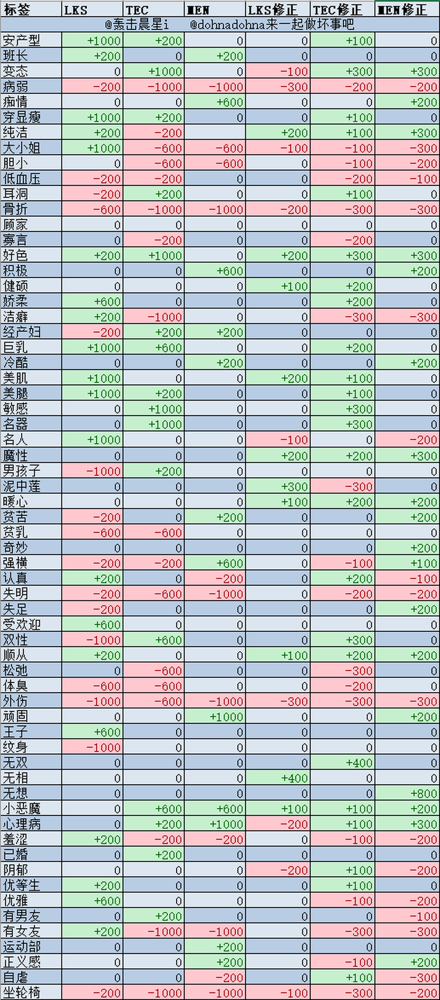
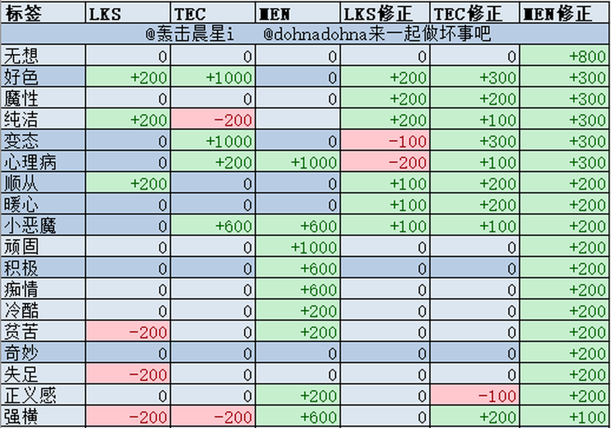

整合攻略 | 来源：B站专栏 + 小黑盒 + 全网攻略
| 属性 | 缩写 | 作用 |
|---|---|---|
| 容貌 | LKS | 顾客颜狗，颜值高容易被选中 |
| 技巧 | TEC | 与收入挂钩，越高评分越高钱越多 |
| 精神 | MEN | 低于D后崩溃，收入大幅降低 |
| 状态 | 颜色 | 说明 |
|---|---|---|
| 安全 | 绿色 | Def > 3，最安全 |
| 黄色/红色 | 黄/红 | 妊娠概率依次增加 |
| 独角兽 | 绿色胶囊 | 纯洁象征，收入增加 |
| 妊娠 | 粉色 | 属性变动扣更多，无法复原 |
| 崩溃 | 红色 | 收入大幅降低，无法复原 |
| 条件 | LKS | TEC | MEN |
|---|---|---|---|
| 正常春销 | -200 | +400 | -800 |
| 妊娠状态 | -400 | -200 | -1200 |
词条会影响春销后的属性变动。例如"魔性+小恶魔+好色"组合：LKS+200, TEC+1800, MEN+500修正
春销酬宾日 客人友好，但词条收敛
春销破灭日 客人收入高，常出现S级顾客，大概率出现"顺从"等好词条
挡刀法 找一个3D属性（低LKS）的妹子，遇到坏词条顾客时换她接客
| 词条 | LKS | TEC | MEN | LKS修正 | TEC修正 | MEN修正 | 评价 |
|---|
完整词条表（共约70+词条）

精选优质词条（推荐培养用）

| 地图 | 位置 | 徽章 | 效果 |
|---|---|---|---|
| ASP | 娱乐室 | Atom | A技能 BUFF增益+20% |
| 仕山医疗所 | 院长室 | Herb1 | 最大HP+200 |
| 仕山医疗所 | 门诊挂号 | b1 | 最大HP+200 |
| 产峰工业 | 产品仓库 | Herb2 | 最大HP+400 |
| 美术馆 | 曜会天目碗 | Alien | A技能 MP-6 |
| 芽生宿舍 | 宿舍管理员室 | Skip | SPD+1 |
| 化学研究所 | 放射线间 | Doom | D技能 BUFF增益+20% |
| 化学研究所 | 解剖间 | Brain | B技能 MP-6 |
| 东云码头 | 货港Y08 | Ajari | A技能 BUFF持续+1回合 |
| 东云码头 | 变电设备 | Ace | A技能 威力+20% |
| YR精废厂 | 组装室 | Crown | C技能 BUFF增益+20% |
| 亚商城 | 奴印良品 | Herb3 | HP+800 |
| 亚商城 | 得浦午餐 | Virus | V技能 BUFF持续+2回合 |
| 后亚地 | 卓著工作室 | Bear | B技能 威力+20% |
| 信息工学楼 | 器材室 | Candy | C技能 MP-6 |
| 信息工学楼 | 瓦礫 | Herb5 | HP+6000 |
| 造船所 | 舾装品仓库 | Dice | D技能 威力+20% |
| 造船所 | 资材仓库 | Vamp | V技能 BUFF增益+40% |
| 第三学校 | 烹饪室 | Skip | SPD+1 |
| 第三学校 | 女子更衣室 | Dream | D技能 BUFF持续+1回合 |
| 产业园区 | 间B3 | Dose | D技能 MP-6 |
| 产业园区 | 会议室 | Crash | C技能 威力+20% |
| 花霞祭 | 野外茶会 | Herb4 | HP+2000 |
| 昂埃皮克 | 大套房 | Cook | C技能 BUFF持续回合+1 |
| 昂埃皮克 | 舰桥 | Viper | V技能 威力+40% |
| 等级 | 首选地点 | 推荐路线 / 备注 |
|---|---|---|
| 2级 | 化学研究所 · 生物安全柜 | 二三级掉落点很多，随便刷刷就齐 |
| 3级 | 信息工学楼 · 瓦砾；仕山医疗所 · 挂号处 | 同上，从4级开始才需要特地去刷 |
| 4级 | 产业园区 · F2、A1 | ⭐ 售货机角→E3→D2→C1→A2→A1：刷两组怪，拿武器+三个道具 |
| 4级备选 | 产业园区 · F2 | 小展示会→H3→G3→F2：同样两组怪但拿不了道具，原则上不推荐；A1迟迟不出可试一次F2 |
| 5级 | 造船厂 · 离线门和G门后面 | 唯一指定地点，掉率极高前几次基本必掉。每过一次离线门消耗一个炸药，且必须过了电波妹解锁G门的剧情 |
| 6级 | 迷宫(URN) · C4、F2 | ⭐ A→C→F→J→N→不连续面N：过两个掉落点后撤退的最短路线。进迷宫前存档，C和F都没掉就小退到标题读档（SL），效率最高 |
其他掉落点补充：2级还可刷 ASP / 产峰工业 / 美术馆 / 芽生宿舍；3级还可刷 亚商城（乔伊哈涅掉率较高）/ 后亚地；YR精废厂离线门后、信息工学楼也有4级掉落。
| 类型 | 特点 | 适用 |
|---|---|---|
| 均衡型 | 力量(POW)与技巧(TEC)均衡，总数值最高 | 兼顾输出与被动触发 |
| 输出型 | 力量高、技巧低。力量与输出直接挂钩 | 纯输出定位角色 |
| 技巧型 | 技巧高、力量很低 | 个别功能型角色 |
| 廉价型 | 便宜但数值低 | 不缺钱，不用考虑 |
TEC的作用 对伤害没有直接提升，而是提升：①被动技能发动几率 ②主动技能上debuff的成功率 ③攻击暴击率
| 路线 | 战斗 | 武器 | 说明 |
|---|---|---|---|
| CFIMR | 20战 | 3武 | 效率最高，面R撤退 |
| CEHL | 14战 | 2武 | 消耗最小 |
| ACEHMR | 19战 | 3武 | 不连续面R撤退 |
| ACEHLQV | 22战 | 3武 | 直冲boss |
基于后期刷高难迷宫的最优流程得出。先看结论，再看分析。
| 角色 | 推荐武器 | 定位 | 核心理由 |
|---|---|---|---|
| 男主 | 输出型 | 单体输出主力 | 没有受TEC影响的技能；最好放前锋（被动回合回蓝，后排不触发） |
| 菊千代 | 均衡型 | 单体+AOE主力 | 星威落+二动被动输出翻倍，均衡兼顾输出与被动触发率 |
| 电波妹 | 输出型 | AOE输出主力 | 唯一全场AOE，开场开AOE秒全场=无伤刷怪；可喂怒气道具提升输出 |
| 粉毛 | 均衡型（输出型亦可） | 前期清怪副手 | AOE伤害低，用于前期清怪给主力省蓝；被动「防对手行动」有用 |
| 白毛 | 技巧型 | 抢一动主力 | 必带双速徽章堆S+速度；靠TEC保证降防debuff成功率（打猫猫怪） |
| 护士妹 | 技巧型 | 迷宫奶妈 | 被动按TEC回血+喂道具效果翻倍；迷宫蓝量紧张，喂回蓝药更省 |
| 爱丽丝 | 均衡型（输出型亦可） | 对特殊BOSS奇兵 | 对付站位极靠后的BOSS，被动抢一动；均衡型备注「在里面装满了快乐的梦想」❤ |
| 小丑 | 输出型 | 灵活万金油 | 没有TEC相关被动；练起来非常肉（血量仅次于大哥），三技能可回血 |
| 虎太郎 | 输出型（随便） | 真·工具人 | 唯一作用：四技能+80防御帮队友挡刀（配+1回合徽章持续两回合） |
| 大哥 | 输出型 | AOE输出主力 | 拥有伤害最高的AOE，比电波妹和菊千代单次星威落更高 |
| # | 角色 | 阶段1 | 阶段2 | 阶段3 | 地点 |
|---|---|---|---|---|---|
| 1 | 鎌瀬衣縫 | 接客两次后卖给指定样貌 | 接客这个样貌的人 | 和她说话 | めぐみ通り |
| 2 | 辻リリヱ | 处○状态卖给吉田学 | TEC达A以上卖给吉田学 | 和她说话 | 美术馆 |
| 3 | 阿久津恭花 | 接客两次后卖给指定样貌 | MEN在C以下卖给前田康平 | 和她说话 | 化学研究所 |
| 4 | 嶽見かのの | 处○状态卖给指定样貌 | 接客总计3w后卖给指定样貌 | 和她说话 | 东云码头 |
| 5 | 神麓凛 | TEC在A以上卖给指定样貌 | 卖给神麓大輔 | 同上 | アモル |
| 6 | 春夏秋ノエル | TEC在B以下卖给指定样貌 | 接客3回以上派遣给南梨武 | 和她说话 | ASP |
| 7 | 橘心瑠姫 | 卖给指定样貌 | 接客总计3w后卖给孕岩生真 | 和她说话 | - |
| 8 | 槇環 | 处○状态派遣给岡翔太 | 还是派给岡翔太 | 处分她 | - |
| 9 | 清水千晴 | TEC在B以下卖给指定样貌 | MEN在C以下卖给指定样貌 | TEC在S以上卖给指定样貌 | 仕山病院 |
| 10 | 笹月フミ | 卖给指定样貌 | 接客总计8w后派遣给鶏飼明日美 | 和她说话 | - |
| 11 | 小林早奈 | 接客两次后卖给指定样貌 | 接客四次后卖给指定样貌 | 和她说话 | 第三学校 |
| 12 | 高橋菜々実 | 接客总计6w后卖给高橋宗一郎 | 卖给高橋宗一郎三次后，怀yun状态再卖 | 卖给高橋宗一郎 | サンホー工業 |
| 13 | 三うらしゅ子 | 卖给指定样貌 | 卖给指定样貌 | 处分她 | 造船所 |
注：高橋宗一郎出现概率迷之低，是最难收集的特殊女主。
| 地图 | 特殊门 | 进入方法 |
|---|---|---|
| 仕山医疗所 | 安全门 | 猫猫入队后进入 |
| YR精废厂 | 离线门 | 商店买炸药炸开 |
| 造船所 | G门后酬宾室 | 需要炸药开门 |
后亚地 卓著工作室只需要打一关，25%出3级武器
造船所 酬宾室5级武器掉率很高，每次需1炸药
YR精废厂 组装室箱子白给，可刷2级武器